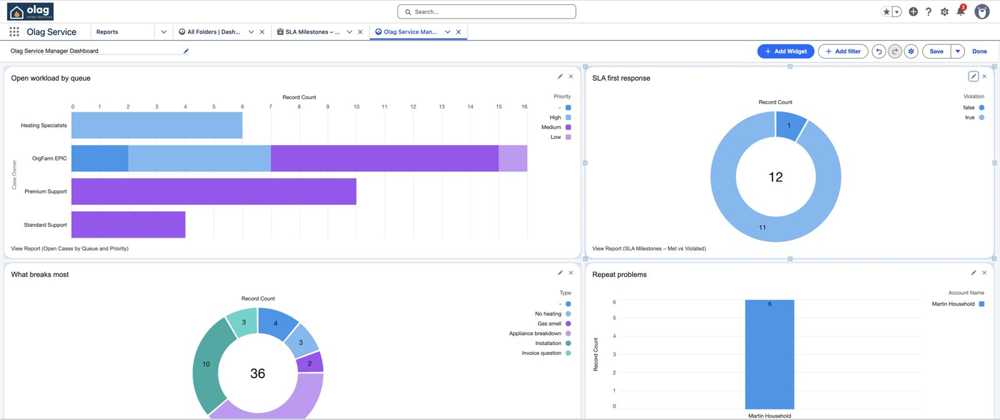
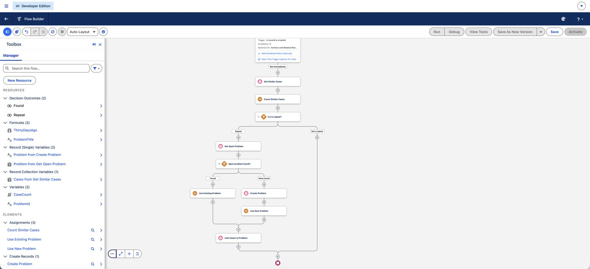
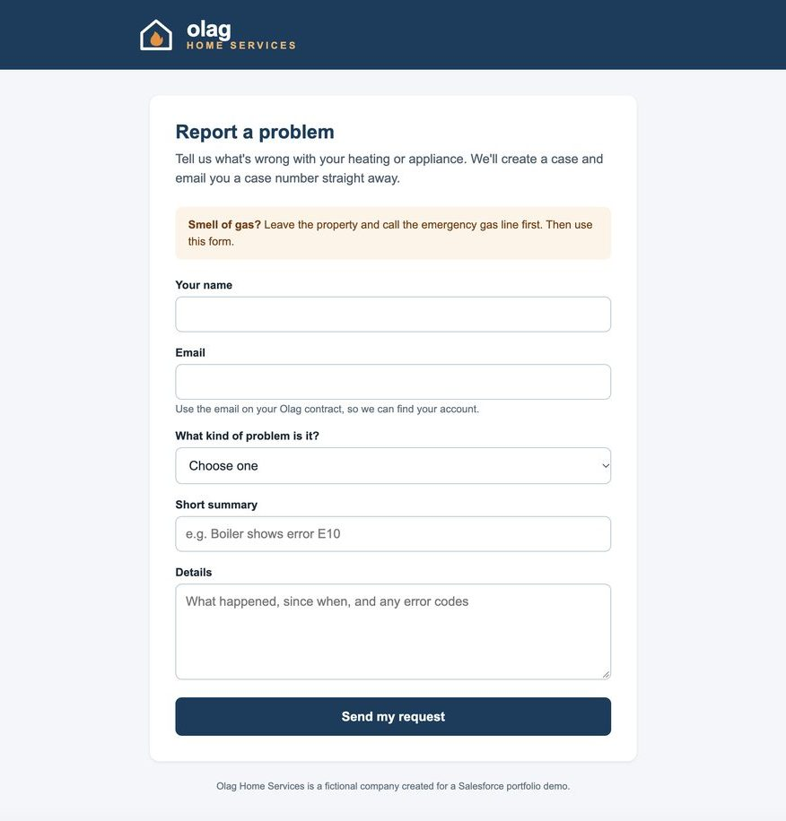
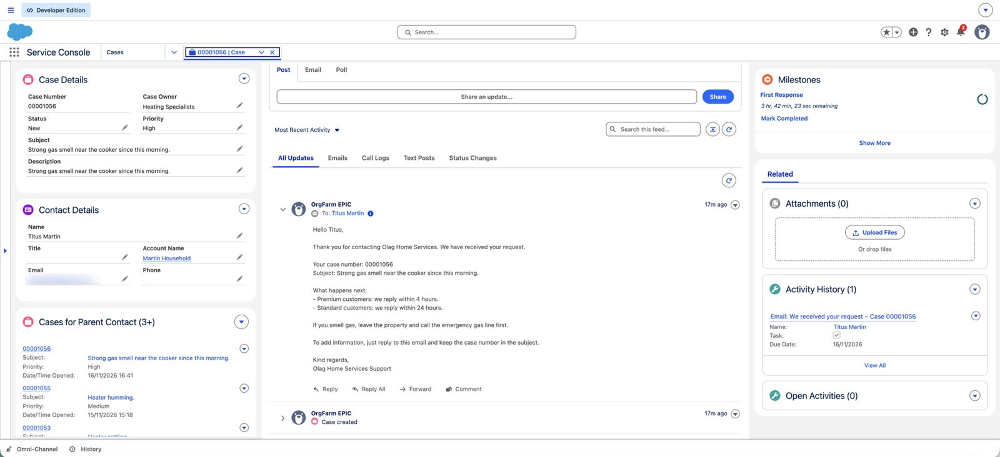
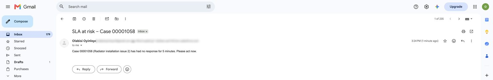
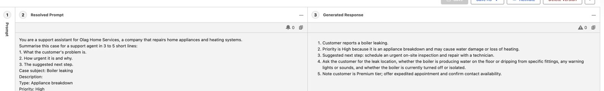
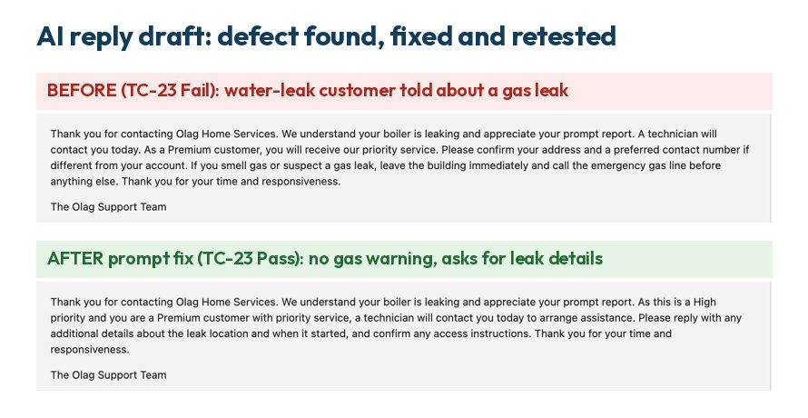
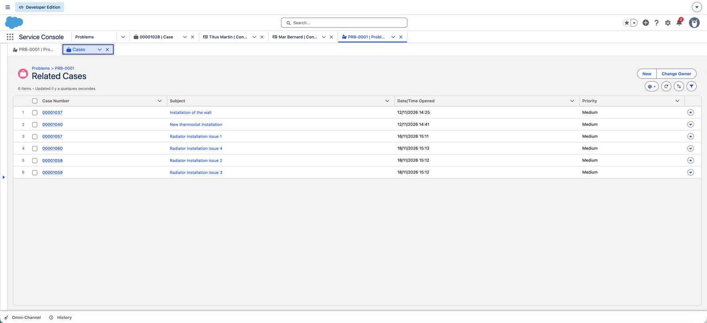
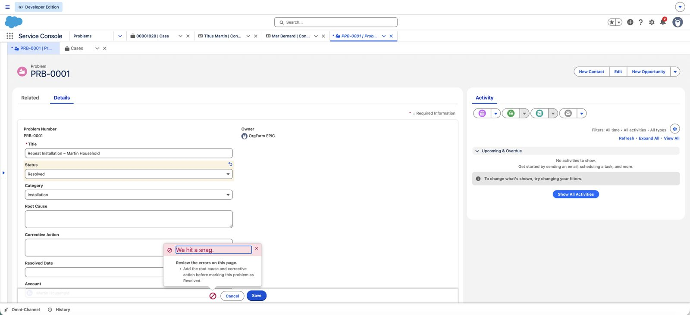
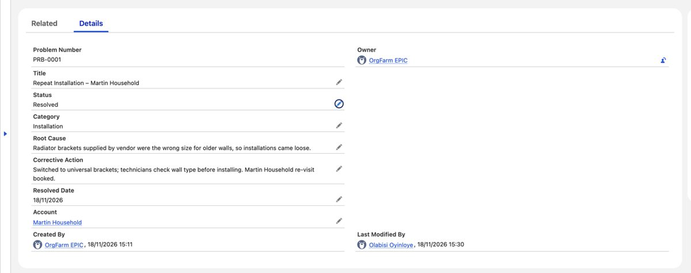

Smart case triage that hits SLAs
A Service Cloud solution for Olag Home Services, a fictional heating and appliance repair company. Urgent cases reach the right team automatically, Premium customers get a 4-hour response promise, agents get AI help, and repeat faults are fixed at the root.
- Role
- Business Analyst, admin and QA tester
- Period
- November 2026
- Platform
- Salesforce Service Cloud
- Scope
- 8 user stories, 7 Flows, 2 AI prompts
- Testing
- 27 test cases, 4 defects fixed
- Evidence
- 64 screenshots
Data. Built in my own Salesforce Developer org. Olag Home Services, its customers and all cases are fictional test data.

Business problem
Why the project exists.
A LinkedIn post made a point that stayed with me: support teams measure how fast they close cases, but the same fault keeps coming back, because closing a case is not the same as solving the problem. I built this project around that idea.
Current state at Olag
- Every request lands in one shared inbox, with no triage
- A gas smell can wait behind an invoice question
- Premium customers pay for faster service but have no response promise
- Agents read long messages before they can reply, so customers wait longer
- The same faults return for the same households; nobody records the root cause
- Managers have no view of workload or response times
Goals
- Urgent and safety cases reach the right team in seconds
- Response times promised and tracked by customer tier
- A warning before a promise is missed
- Faster first replies with AI help, checked by an agent
- Repeat faults grouped and closed only with a root cause
- One dashboard for the service manager
What I built
Requirements as user stories, and the Salesforce design for each.
| Story | Requirement | Solution |
|---|---|---|
| US-01 | Capture every request from email and web, with an instant reply | Email-to-Case, Web-to-Case on a public Salesforce Site, auto-response rule |
| US-02 | Set priority automatically; never overwrite an agent's choice | Before-save Flow with keyword and type rules |
| US-03 | Route to the right team: heating specialists, Premium or Standard | After-save Flow, 3 queues, Omni-Channel |
| US-04 | Promise response times by tier: 4 h Premium, 24 h Standard | Entitlement processes and milestones, after-save Flow |
| US-05 | Warn before a promise is missed | Flow with a scheduled path and email alert |
| US-06 | Help agents with AI: summary and reply draft | Prompt Builder templates, Dynamic Forms |
| US-07 | Fix the root cause of repeat faults | Custom object Olag Problem, Flow, validation rule |
| US-08 | Give managers one view | 4 reports, dashboard, branded Lightning app |

Process map
From a customer's report to the manager's dashboard.
Walkthrough
One gas-smell case, from the form to the SLA warning.



AI assistant
Two Prompt Builder helpers on the case page. The agent always checks before sending (human in the loop).
AI Summary
3 to 5 lines: the problem, how urgent it is and the next step. If details are missing, it tells the agent what to ask instead of guessing.
AI Reply Draft
A short, polite email for the agent to send. Safety rule: if the case mentions gas, the reply starts with "leave the building and call the emergency gas line".
How it helps the team
- Understand a case in seconds (about 3 s per result)
- Less writing on routine replies
- Same tone and safety message for every agent
How it helps the business
- Faster first response, so the Premium SLA is easier to meet
- Lower handling time per case
- Tested like any feature: accuracy, no invented details, safety


Test strategy and results
Requirements-based testing: every acceptance criterion covered and traced to its user story.
Test types
- Functional, positive and negative
- Integration: email and web channels
- End-to-end, from form to dashboard
- Regression after every fix
- AI output: accuracy, invented details, safety
- Simulated UAT as agent and manager
Test data
- Martin Household: Premium customer
- Bernard Household: Standard customer
- Realistic cases: gas smell, boiler leak, repeat installations
- Existing records checked before writing expected results
Defects and root cause
Four tests failed first. Each was traced to its root cause, fixed and retested.
| Test | Severity | Expected vs actual | Root cause | Fix |
|---|---|---|---|---|
| TC-13 | High | Queue owner expected; case stayed with the default owner | Owner set before save was overwritten by a support setting | Routing moved to an after-save Flow |
| TC-20 | High | SLA clock expected; web cases had none | Same order-of-execution issue | After-save Update Records |
| TC-23 | Critical | Normal reply expected; water-leak customer told to evacuate for gas | Unclear prompt rule ("mentions gas") | Strict rule, negative test, regression on a gas case |
| TC-25 | Medium | AI button expected on the case page; none shown | The app used its own default page | Page assigned as the app default |
Test cases
Open a row for preconditions, steps and the expected result.
| ID | Test case | Story | Result |
|---|---|---|---|
| TC-01 | Email creates a case
| US-01 | Pass |
| TC-02 | Gmail forwards to Salesforce
| US-01 | Pass |
| TC-03 | Replies stay on the same case
| US-01 | Pass |
| TC-04 | Web form creates a case
| US-01 | Pass |
| TC-05 | Web case gets a priority
| US-01 | Finding |
| TC-06 to 10 | Priority rules
| US-02 | Pass |
| TC-11 | Agent's priority is kept
| US-02 | Pass |
| TC-12 | Auto-reply
| US-01 | Pass |
| TC-13 | Urgent case to Heating Specialists
| US-03 | Fail → Pass |
| TC-14 | Premium case to Premium Support
| US-03 | Pass |
| TC-15 | Standard case to Standard Support
| US-03 | Pass |
| TC-16 | Case pushed to an available agent
| US-03 | Blocked |
| TC-20 | Entitlement and SLA clock
| US-04 | Fail → Pass |
| TC-21 | SLA warning email
| US-05 | Pass |
| TC-22 | AI case summary
| US-06 | Pass |
| TC-23 | AI reply, water leak (negative test)
| US-06 | Fail → Pass |
| TC-24 | AI reply, gas case
| US-06 | Pass |
| TC-25 | AI on the case page
| US-06 | Fail → Pass |
| TC-26 | Repeat cases create a Problem
| US-07 | Pass |
| TC-27 | Next case joins the same Problem
| US-07 | Pass |
| TC-28 | Root cause required
| US-07 | Pass |
| TC-29 | Other households not linked
| US-07 | Pass |
| TC-30 | Manager dashboard
| US-08 | Pass |
Results
What the system now makes visible (test data).



Lessons learned
Next improvements
Product backlog, each item linked to a finding.
- When a Problem is resolved, prompt the agent to close or update its linked cases
- Make Type required on the web form, or let AI suggest it
- Production SLA timing: warn at 3 hours (Premium) and 22 hours (Standard)
- Smarter priority keywords ("Oven not heating" was set to High)
- Flag web cases from unknown emails so an agent can match the customer
Ola Grillon · Salesforce project 1